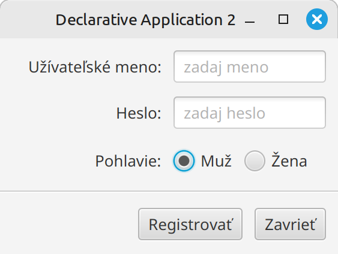
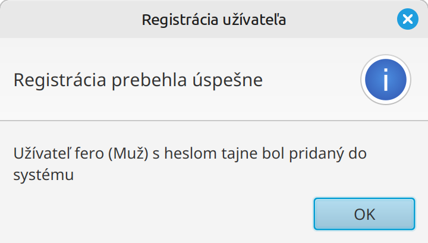
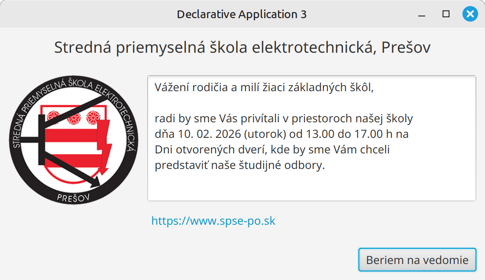
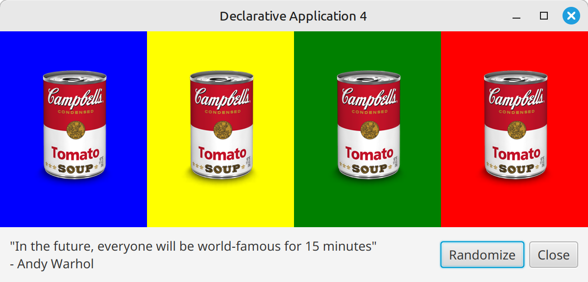
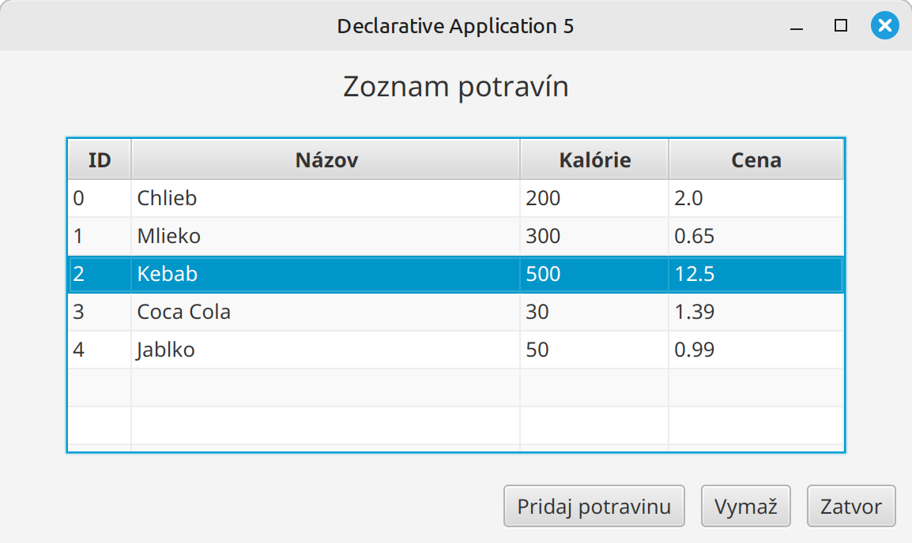

Cvičenie 14: JavaFX komponenty¶
Na tomto cvičení si budeme vytvárať rôzne typy scén a GUI programov
OPG GUI repozitár¶
Na adrese https://github.com/wagjo/opg-gui-ulohy máte repozitár, do ktorého budete robiť dnešné úlohy.
- Vytvorte si svoju vlastnú kópiu tohto repozitára pomocou tlačítka
Forkna GitHub stránke. - Potom si repozitár stiahnite do svojho počítača
- V repozitári je 5 úloh, každá úloha má deklaratívny a procedurálny variant
- Ako ukážku máte v každej úlohe naprogramované počítadlo
- Úlohy spúšťate pomocou triedy Main, v deklarativnom alebo proceduralnom variante
Vašou úlohou bude zmeniť kód v jednotlivých úlohách tak, aby spĺňal zadanie.
- V deklaratívnej verzii použite FXML a Controller
- V procedurálnej verzii vytvorte scénu pomocou kódu, všetko dajte do triedy Application
Úlohy¶
Úloha 14.1: Premena jednotiek teploty
Upravte úlohu 1 tak, aby scéna vyzerala nasledovne:

Zadanie:
- Ak zadáte číslo do jedného z textových polí, v druhom poli sa automaticky vypočíta prevedená hodnota
- Ako koreňový prvok použite VBox
- Každý riadok bude HBox, ktorý v sebe bude mať 3 prvky
- Na odchytenie vstupu z klávesnice použite
OnKeyTyped
Úloha 14.2: Registrácia užívateľa
Upravte úlohu 2 tak, aby scéna vyzerala nasledovne:

Zadanie:
- Všimnite si, ako sú všetky 3 riadky zarovnané
- Ako koreňový prvok použite
GridPane, bude mať 2 stĺpce a 5 riadkov - Posledné 2 riadky majú spojené stĺpce
RadioButtonprvky musia mať spoločný toggleGroup- Hodnotu pohlavia zistíme nasledovne:
((RadioButton)pohlavieGroup.getSelectedToggle()).getText() - Tlačítko
Zavrieťukončí program pomocouPlatform.exit() - Tlačítko
Registrovať vypíšeAlert` box v ktorom uvedie hodnoty, ktoré zadal užívateľ

Úloha 14.3: Oznam
Upravte úlohu 3 tak, aby scéna vyzerala nasledovne:

Zadanie:
- Ako koreňový prvok použite BorderPane
- Ako obrázok použite súbor spse.png a komponent
ImageView - Text oznamu dajte do prvku
TextArea - Na odkaz použite
Hyperlink - Tlačítko
Beriem na vedomieukončí program pomocouPlatform.exit()
{kind=link}
Úloha 14.4: Andy Warhol
Upravte úlohu 4 tak, aby scéna vyzerala nasledovne:

Zadanie:
- Ako koreňový prvok použite
BorderPanealeboVBox - Tlačítko
Closeukončí program pomocouPlatform.exit() - Tlačítko
Randomizenech zmení farby pozadí na náhodné - Obrázky sa budú umiestňovať do
TilePanea to takto: - Každý prvok v
TilePanenech je VBox, do ktorého potom dáteImageView - Každý VBox nech má svoj atribút v Controlleri a farby potom môžete zmeniť pomocou nasledovného kódu
Úloha 14.5: Jedálniček
Upravte úlohu 5 tak, aby scéna vyzerala nasledovne:

Zadanie:
- V kóde si vytvoríte zoznam jedál, kde jedlo je
record Jedlo(Integer id, String nazov, Integer kalorie, Double cena) {} - Ako koreňový prvok použite BorderPane
- Tabuľka
TableViewnech má 3 stĺpceTableColumn. - Automatickú šírku posledného stĺpca viete nastaviť pomocou atribútu Column Resize: constrained resize
- V procedurálnej verzii je to
tabulka.setColumnResizePolicy(TableView.CONSTRAINED_RESIZE_POLICY_FLEX_LAST_COLUMN);
- V procedurálnej verzii je to
- Tlačítko
Vymažvymaže aktuálne vybraný prvok - Tlačítko
Zatvorukončí program pomocouPlatform.exit()
Kód na vpísanie dát do tabuľky (v deklaratívnej verzii implementujte v Controlleri rozhranie Initializable):
@Override
public void initialize(URL location, ResourceBundle resources) {
id.setCellValueFactory(p -> new SimpleIntegerProperty(p.getValue().id()).asObject());
nazovJedal.setCellValueFactory(p -> new SimpleStringProperty(p.getValue().nazov()));
kalorie.setCellValueFactory(p -> new SimpleIntegerProperty(p.getValue().kalorie()).asObject());
cena.setCellValueFactory(p -> new SimpleDoubleProperty(p.getValue().cena()).asObject());
tabulka.getItems().setAll(jedloList);
}
Kód na vymazanie prvku: